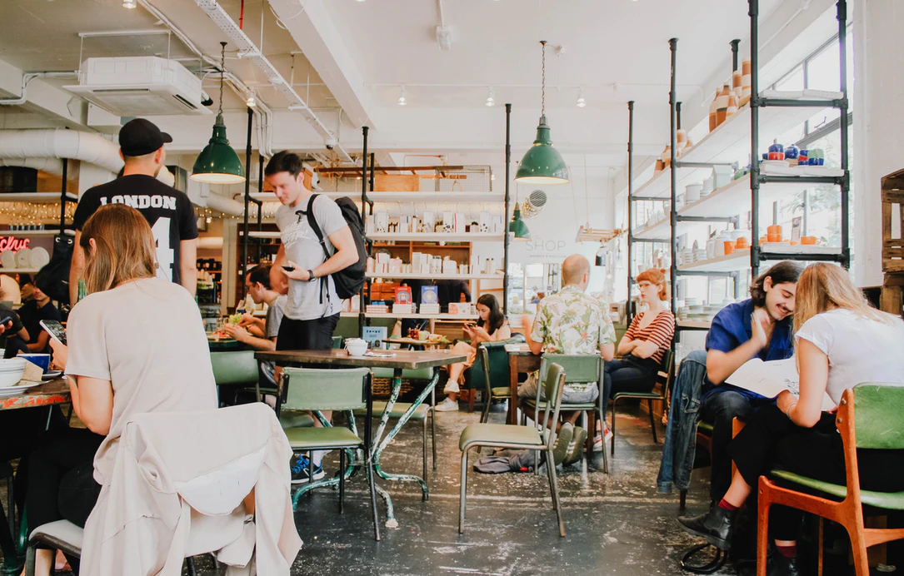
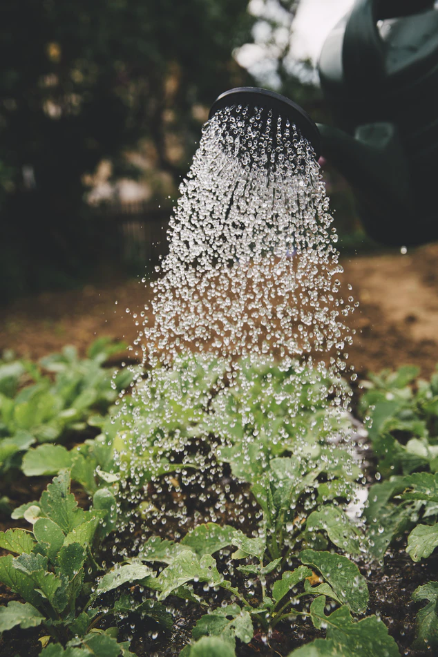

Arbeitsgruppen
Arbeitsgruppen
Schülerrat Arbeitsgruppen Vorstellung
Kanterando:
Dass die Covid-19 Krise auch großartigen solidarischen Umgang
schafft, beweist uns eine Gruppe von SchülerInnen ab der 8.
Klasse. Diese hat nämlich ein tolles Projekt auf die Beine
gestellt, um Risikogruppen in dieser schwierigen Zeit zu
schützen und gleichzeitig zu helfen. In weiten Teilen Leipzigs
wird von unseren SchülerInnen für Menschen eingekauft, die
aufgrund körperlicher Beeinträchtigungen oder eines erhöhten
Schutzaufkommens nicht selbst den örtlichen Supermarkt besuchen
können. Für ihr Engagement wurde Kanterando schon in einen
Artikel der Leipziger Volkszeitung gelobt. Du willst auch Teil
des Teams werden und Leuten aus deiner Nachbarschaft helfen?
Kein Problem, schreib dich einfach unter
diesem Link bei moodle
ein oder wende dich an die Steuergruppe des Projekts (Freddy
Völkner (12), Clara Niebisch (10d), Tina Völkner (10d), Hanna
Möhring (10d), Jule Roßner (10d) und Kristian Lehmann (11)).
AG Mensa:

Das Essen schmeckt nicht, es gibt zu wenig vegetarische
Gerichte, es ist laut und voll, die Ausgabe klappt nicht immer…
Solche Beschwerden gehen immer häufiger beim Schülerrat ein und
aus diesem Grund wird es zukünftig eine Arbeitsgruppe geben, die
diese Probleme angeht. Es soll eine bereits geplante Mensarunde
eingeführt werden, bei der Preis- und Qualitätsmängel der
Gerichte mit dem Essensanbieter zusammen thematisiert und andere
Beschwerden diskutiert werden sollen. Die Arbeitsgruppe kümmert
sich darum, dass wir alle zukünftig in einer noch entspannteren
Atmosphäre leckeres und vor allem für jeden(!) bezahlbares Essen
genießen können.
Litfaßsäule:

Falls es doch dem ein oder anderen noch nicht aufgefallen ist…
Seit neustem schmückt eine Litfaßsäule das Erdgeschoss unserer
Schule. Wo genau? Augen auf am Sekretariat, denn dort steht das
bis jetzt noch das ungeschmückte Exemplar. Damit es in Zukunft
nicht mehr so viele kahle Stellen gibt, braucht es ein paar
motivierte SchülerInnen, um der Säule etwas Leben einzuhauchen.
Erste Ideen gibt es da auch schon, zum Beispiel eine Sektion
„Kantiges Schulleben“ oder eine Diskussionsecke. Es gibt noch
viel Spielraum und kreative Entfaltungsmöglichkeiten, um den
schulischen Austausch mit unserer eigenen Litfaßsäule anzuregen
oder die Litfaßsäule als politische Austauschplattform zu
nutzen. Und jetzt, wo sie schon mal da ist, können wir sie doch
auch mit Wörtern bekleben, oder?
Grüner geht’s nicht:

Nachdem beim neu angelaufenen Demokratieprojekt schon ein
„grüner“ Vorschlag gewonnen hat, kommt gleich eine neue
Arbeitsgruppe des Schülerrates hinterher. Diese hat sich zum
Ziel gesetzt, das Kant-Gymnasium Leipzig neu auszustatten, und
zwar mit Pflanzen, Bäumen und Beeten. Außerdem soll eine schon
lang ersehnte Mülltrennung eingeführt werden, damit wir nicht
nur in unserem Schulleben nachhaltiger agieren, sondern uns auch
dessen besser bewusst werden. Auch auf eine erneute
Müllsammelaktion freuen wir uns schon. Wer also Lust hat das
Kant aktiv mitzugestalten und ein bisschen (grüne) Farbe ins
Spiel zu bringen, kann sich gerne unter
diesem Link im moodle
Kurs für die AG einschreiben. Besser und grüner geht’s wirklich
nicht